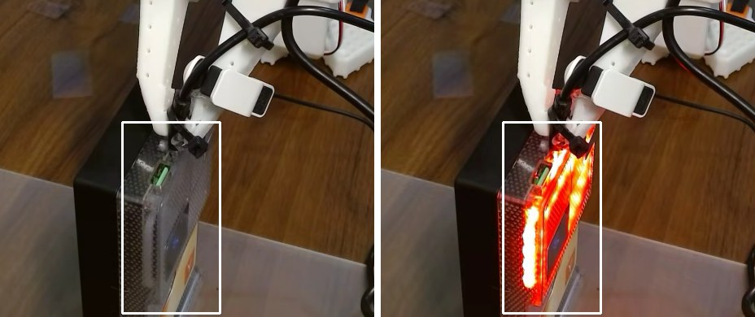
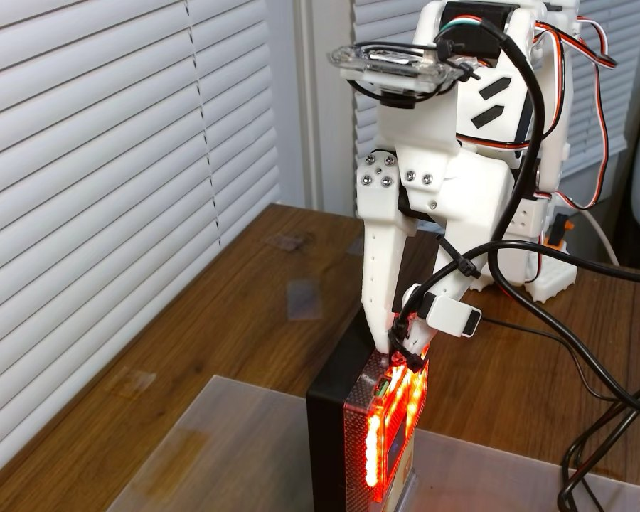
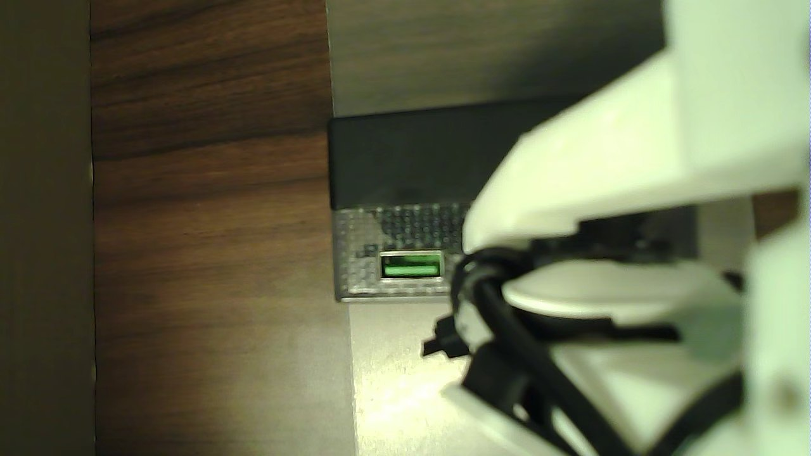

A trained policy cannot be shown every edge case in advance. This is a small test of another way to handle them: check whether the task succeeded and recover when it did not, without retraining. ACT often reaches a USB-C port but does not get the plug to latch, and it has no way of knowing. The harness checks the power bank's display after each attempt and, if the plug did not latch, backs out and retries with a motion taught from one demonstration. Tested on an SO-101 arm.



One indicator per trial. Lit means the plug latched.
34 s on average for a successful plug-in. A trial was stopped and counted as failed after 90 s.
About 60 s when a retry was needed. 5 trials did not latch.
Two sets of 20 trials on the same setup, counted by hand, with the same ACT checkpoint (50 demonstrations, 20,000 training steps). The indicators show totals, not the order of the trials.
| Condition | Latched | Time to latch |
|---|---|---|
| ACT alone | 7 / 20 | 34 s average |
| ACT with the harness | 15 / 20 | about 60 s with a retry |
| Taught motion alone, right after teaching | 5 / 5 | 10.7 s |
A fixed camera watches a region R around the display. The reading is the share of very bright pixels in it:
Taking the maximum over colour channels covers both the red and the white state of the display.
Take a reading s0 just before the attempt, then watch for up to 4 s after it:
Subtracting s0 removes glare and room light. If latched, stop. If not, retry.
The arm backs out and replays one teleoperated demonstration: the commanded joint targets at 30 Hz with the original timing, and the same gripper squeeze.
Commands are replayed instead of the measured path. A position servo pushes in proportion to qcmd − q, so this repeats the contact forces of the demonstration. The display is checked again after each try.
ACT is trained to imitate demonstrated motion. Whether the plug latched is not part of what it learns, and all of its demonstrations were successful ones, so it has no example of what to do after a miss. Adding demonstrations for every way an attempt can go wrong does not scale.
The harness adds that check from outside. It looks only at the outcome, so it catches a miss whatever caused it. If ACT latches with probability p and a retry recovers a miss with probability r, the overall success rate is
With p = 7/20 and P = 15/20 this gives r ≈ 0.62, assuming ACT's own rate was the same in both sets of trials.
The extra time is spent only on a miss:
When ACT succeeds, the harness adds only the few seconds of the check. A trial that needed a retry took about a minute, compared with 34 s for ACT succeeding alone.